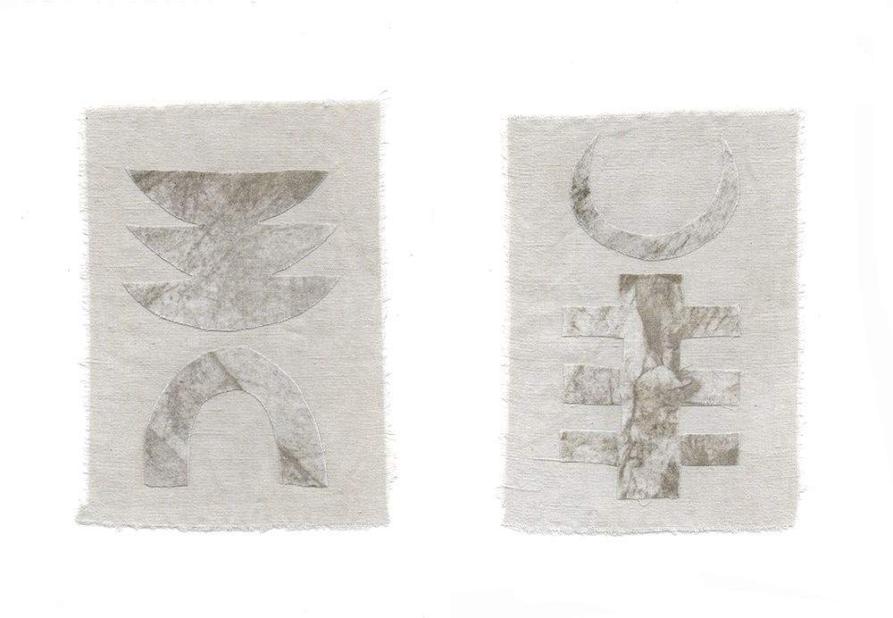
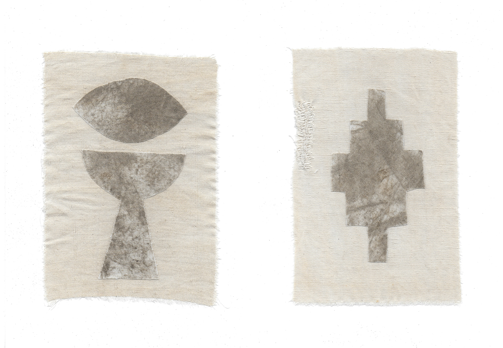
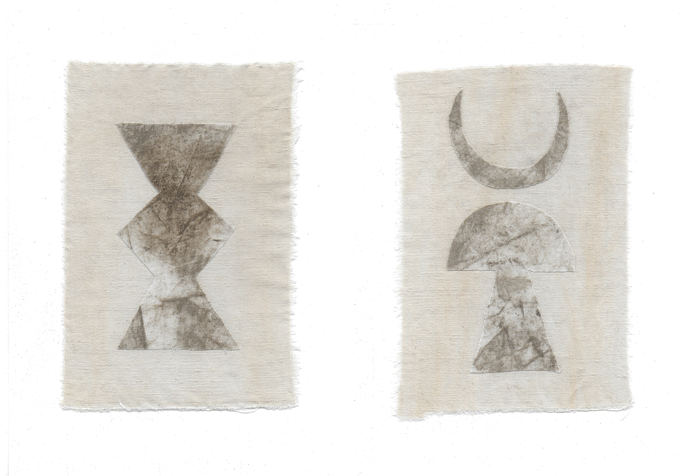
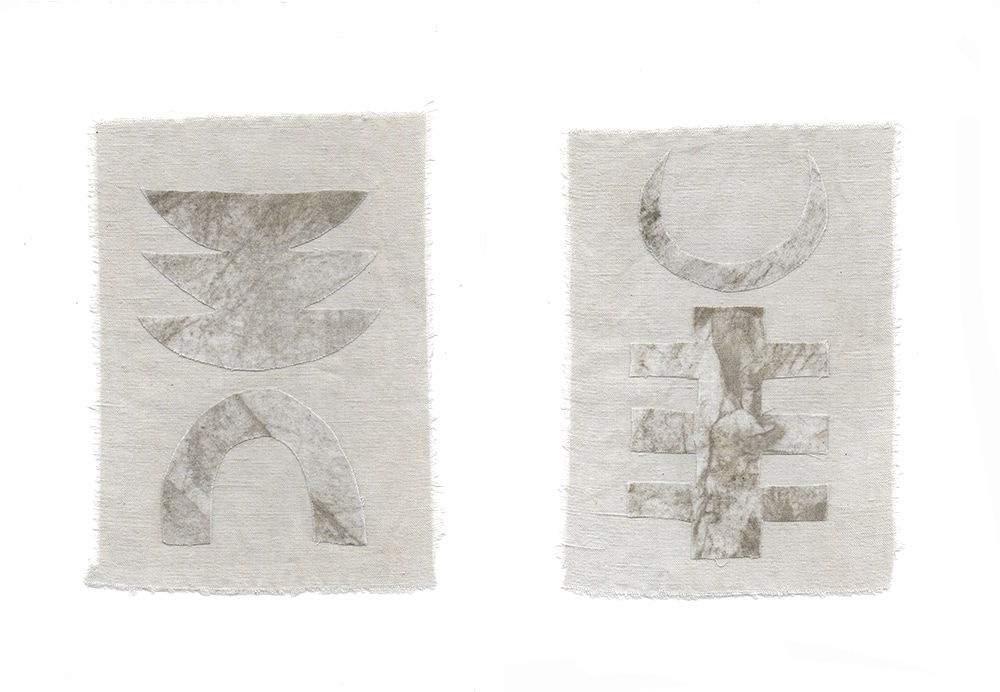
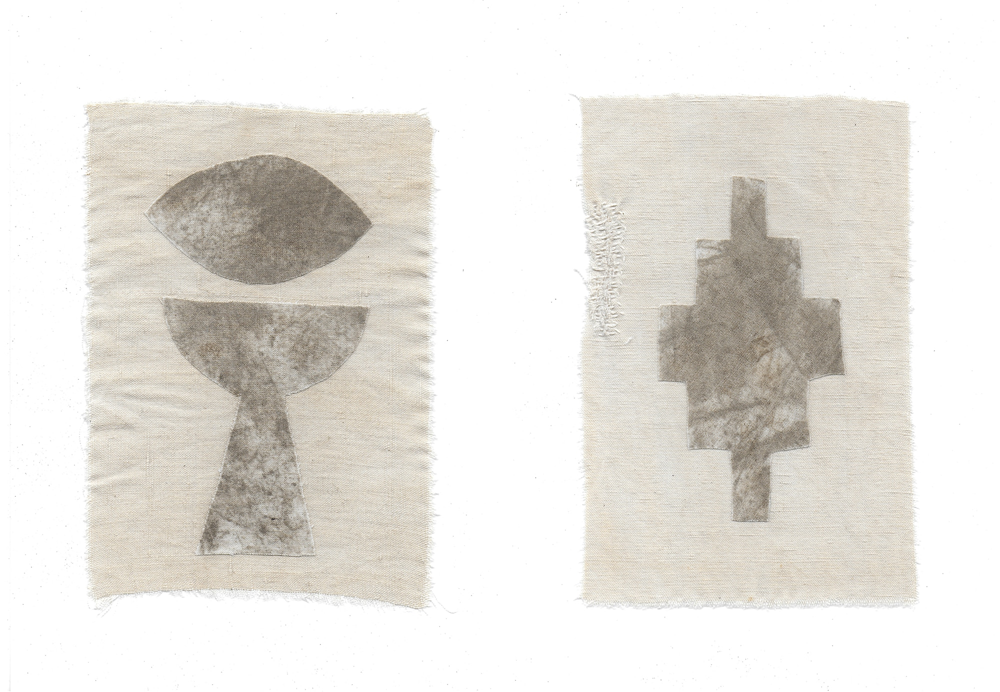
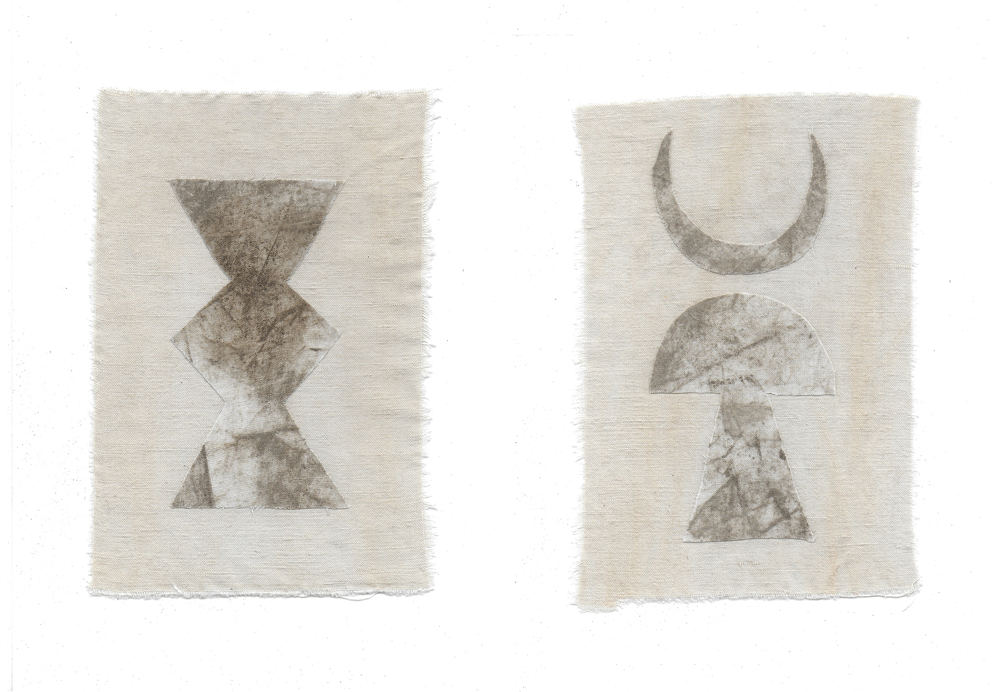
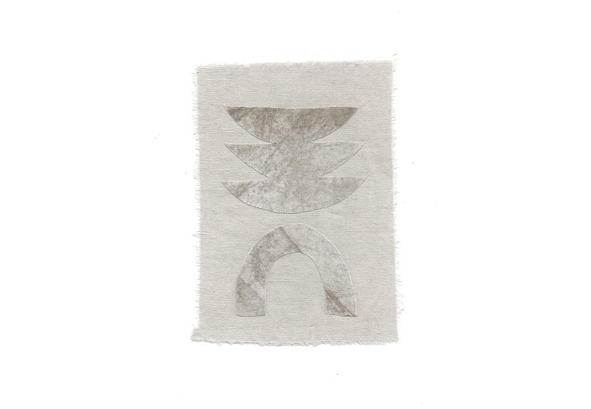
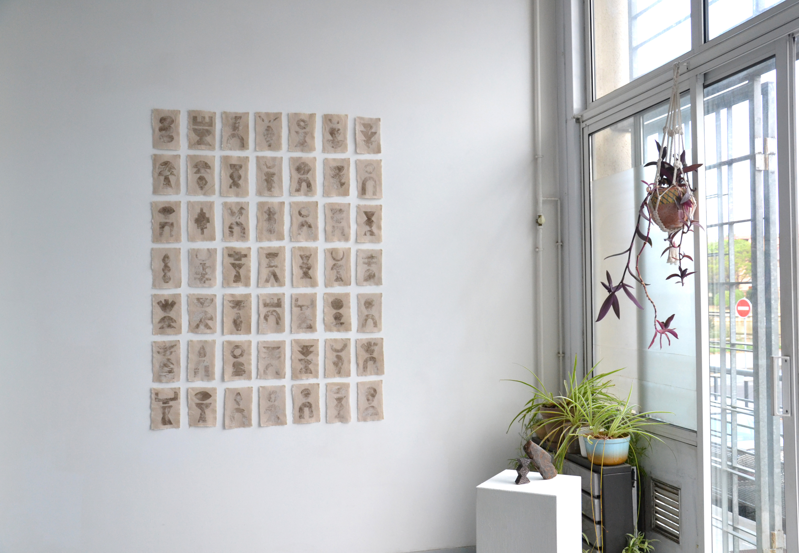
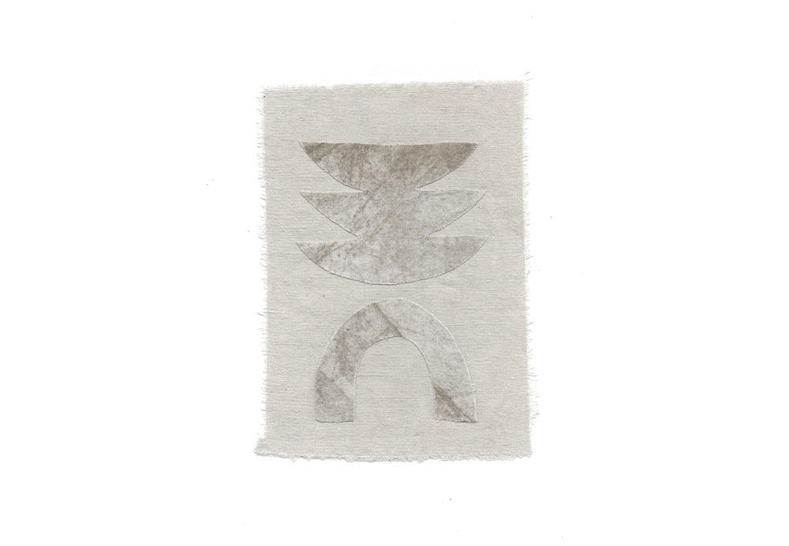
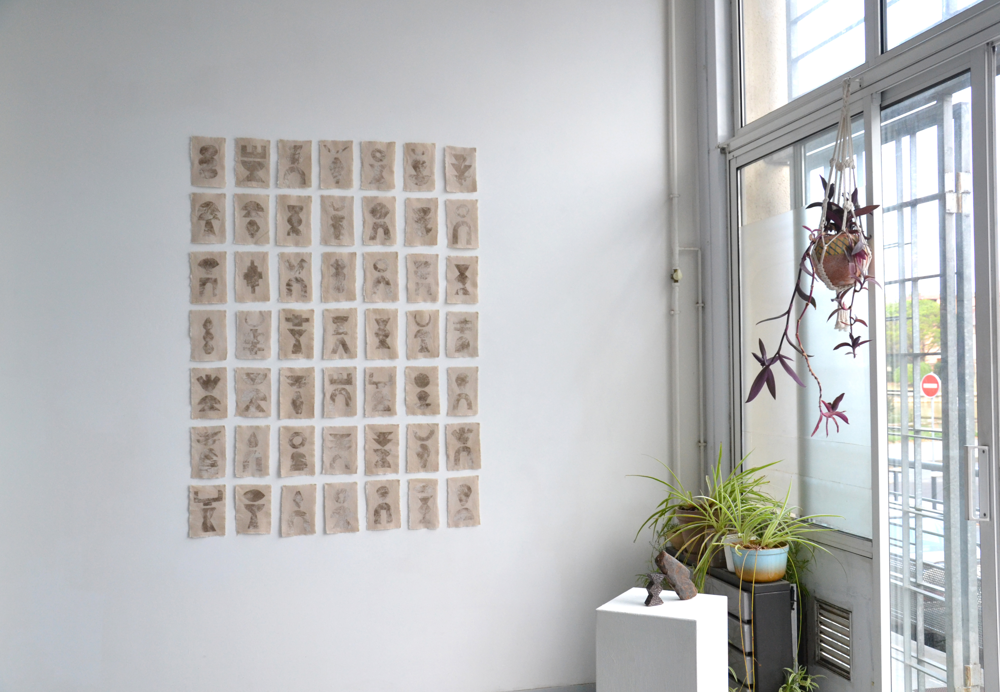

Généalogie des sols
Par la répétition de formes appartenant au même répertoire graphique et la variation de leurs associations, je cherche à témoigner du système de répétition et de transmission dont l’arbre généalogique fait parti.
Le drap familial, transmis, usé et raccommodé, s’inscrit dans l’héritage matériel. Ici, imprégné de terre, découpé et recomposé, il s’inscrit dans l’hypothèse de l’héritage immatériel, celui des mémoires transgénérationnelles qui influent sur notre propre individualité au sein de notre lignée.
À l'origine, le symbole est issu du mot sumbolon, il désignait une pièce cassée en deux, souvent un tesson en terre cuite et qui servait de contrat entre deux personnes. Plus particulièrement dans le cas d’enfants abandonnés, le sumbolon servait comme signe de reconnaissance de leur origine, si les deux morceaux coïncidaient parfaitement.
En combinant deux formes découpées, je reconstitue des sumbolons, des assemblages témoignant d’une filiation commune et par l’utilisation de la terre, je me réapproprie ce matériau, dénominateur commun à ma famille.
"Généalogie des sols", 2022, terre sur tissu, ensemble de 49 collages, 14 x 21 cm chacun
 






 


